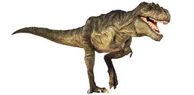
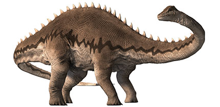
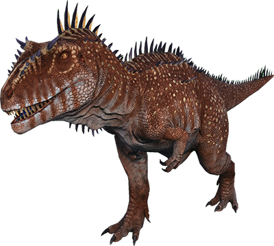

A propos:
DINO Hub is a digital platform merging photorealistic 3D product
demos with interactive content. It is a virtual community where you
can get up close and personal with DINO. Explore the DINO fleet,
hop on the bus and tour our factory, and take part in DINO events –
anytime, anywhere.

type:
Rural regions can still benefit most from digitization these days,
because the issues of distance and the difficult accessibility of
customers and suppliers have driven existing analogue offers into
the city.

fun facts:
These dinosaur fun facts printables might be my favorite resource
(ETA: I wrote that *before* I finished my Solar System Fact Posters!).
Teaching the dinosaur themed unit is the BEST! The children are all
so enthralled with the concept of these giant creatures roaming the
earth millions of years ago. Just look around on the website or my
TpT store and it’s pretty easy to see it’s one of my favorite themes
— from the dinosaur sensory box post and frozen dinosaur eggs to the
playdough dinosaur post, my love of dinosaurs is apparent.
